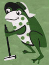
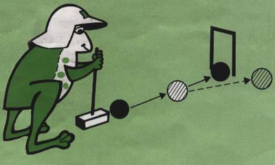
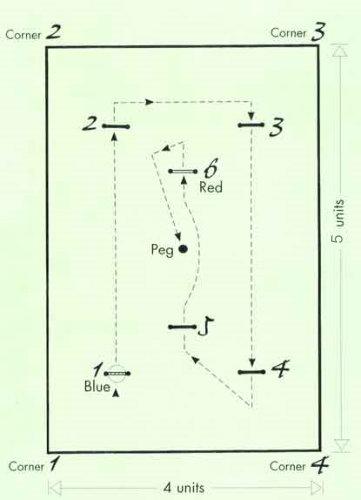

Croquet for Kids
|  |
AUSSIE CROQUET |
The game for school children and beginners alike!
A non-contact, non-confrontation competitive game using a mallet and balls to hit around a set course of hoops.
It has elements of other of other sports such as golf and snooker - hitting at a large target, hitting to a position, hitting other balls - and develops good hand-eye coordination.
A game designed for both primary and secondary schools but has been so successful that it is now being used by many croquet clubs for teaching beginners!
It’s quick, it’s fun and it’s a great was to get started in the world of croquet
Does your school want to know more? Click here for details of your State Headquarters and they can quickly put you through to your nearest croquet club.
Left school a few (or more) years ago? But would really like an opportunity to get involved in a great game, get outdoors, take some exercise and play a game that asks you to think as well as do?

Get with Croaky the frog and Play Aussie Croquet
How to Set Out an Aussie Croquet Court
The hoops and peg are laid out as for Association Croquet.

If you do not have room for a full court then you can scale it down. Use six units for the length, and four for the width. The corner hoops (1 to 4) are one unit from each boundary; hoops 5 and 6 one unit either side of the peg.
The Course
The path along which your ball has to travel starts with hoop 1 (the blue-topped one) and has to follow the set order through to hoop 6, and then hit the centre peg. The dotted line and arrows on the diagram show the direction each ball must go to score each hoop.
How to Play Aussie Croquet
To Start the Game
- Four players
- Choose partners
- Toss a coin to decide which pair go first
- BLUE and BLACK play against RED and YELLOW
- The partners winning the toss play with BLUE and BLACK
- Each player plays the same colour ball for the whole game
- The order you play is painted on the peg: BLUE, BLACK, RED and YELLOW
Time allowed is 30 minutes.
To Score
Count one point for every hoop each ball runs through in order and one for hitting the peg. The winners are the team with the highest score.
To Play
Starting: Place each ball in turn halfway through the first hoop for an easy start.
Each turn is only ONE hit ... unless you earn an extra hit!
An extra hit is earned when you:
- hit your ball through the next hoop in order
- when you hit any of the other three balls with your ball. (You can only hit each other ball once per turn unless you go through the next hoop - then you can hit them all again.)
If you hit two balls in the same stroke, the hit on the first ball is the only one that counts.
If a ball scores a hoop and continues on to hit another ball, the hoop score counts and the player gets only one extra stroke for hitting the ball after the hoop is scored.
If a ball goes over the boundary it is measured in the length of a mallet handle.
Some Tactics:
- Your partner or opponent can hit your ball through your hoop - you score the point.
- You can hit your opponent back out of a hoop if they've not gone all the way through.
- Your ball can go through the hoop the wrong way to get to the right side - but it doesn't score a point.
- You can hit your partner ball into a better position - or an opponent ball out of position.
- You can gently hit your ball into, or off the sides of, the other three balls to finally position your ball to go through a hoop.